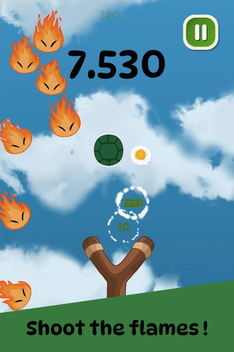
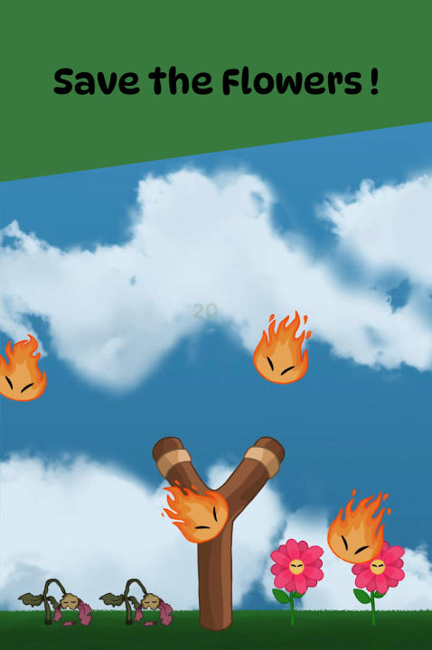

Fire Rain
Unity · C#
Fire Rain is a fast-paced mobile arcade game where players must protect their plants from a raging wildfire. Sling a flying turtle, destroy falling embers, and keep your plants alive.


About the Game
Fire Rain combines quick reflexes with a meaningful purpose. Players must react swiftly to falling fireballs, manage limited resources, and protect their plants from destruction. With each game, players contribute to planting real trees — all revenue supports global reforestation efforts.
The Project
Fire Rain was developed using Unity and C#. The goal was to create a small mobile arcade game for quick and engaging play sessions.
Tools
Development:
- Unity (2022.3)
- GitHub Desktop
Management:
- Trello
- Google Workspace
Responsibilities
I was responsible for the overall programming and implementation of the game, as well as optimization and preparation for release on mobile platforms.
Learnings
Working on Fire Rain gave me valuable experience in mobile game development, including handling different screen resolutions, optimizing performance for Android and iOS platforms, and integrating advertisement SDKs. I also learned the complete release process for mobile games — from build management and testing to publishing on the Play Store and App Store.